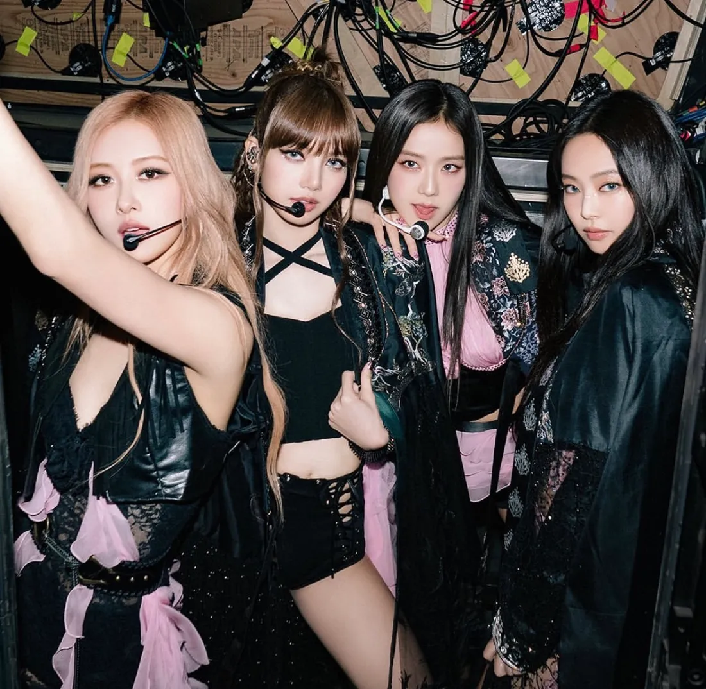

BLACKPINK IN YOUR AREA
Blackpink é um grupo de k-pop composto por quatro integrantes: Jisoo, Jennie, Rosé e Lisa. Elas são conhecidas não apenas pela sua música, mas também pelo seu estilo vibrante, coreografias sincronizadas e presença de palco cativante. O grupo foi formado pela YG Entertainment e fez sua estreia em 2016, desde então alcançou enorme popularidade tanto na Coreia do Sul quanto internacionalmente. Suas músicas frequentemente alcançam milhões de visualizações no YouTube, e elas são reconhecidas como uma das maiores e mais influentes bandas de k-pop da atualidade.

(Black Pink reprodução)
INTEGRANTES

(Black Pink reprodução)
COACHELLA
O BLACKPINK, em abril de 2023 foi o primeiro ato de k-pop fazendo história ao ser headliner do festival de música Coachella, realizado nos Estados Unidos.
A apresentação foi transmitida ao vivo no YouTube e estava programada para ser o ato mais transmitido de todo o Coachella, segundo dados do TechRadar . Previa-se que atrairia 250 milhões de espectadores de transmissão ao vivo na plataforma.
POPULARIDADE INTERNACIONAL
Além de sua enorme base de fãs na Coreia do Sul, Blackpink tem uma base de fãs global massiva, especialmente nos Estados Unidos, Europa e sudeste asiático. O grupo tem colaborado com artistas internacionais como Lady Gaga e Selena Gomez.

(Black Pink reprodução)
PRÊMIOS E RECONHECIMENTOS
Blackpink ganhou inúmeros prêmios de prestígio, incluindo Melhor Artista Novo no Gaon Chart Music Awards, Melhor Grupo Feminino no Mnet Asian Music Awards, e muitos outros.

(Black Pink reprodução)
MODA
Blackpink tem uma forte influência na moda, tanto na Coreia do Sul quanto internacionalmente. Elas são conhecidas por suas escolhas de moda ousadas e ecléticas, que combinam elementos de alta moda com estilos urbanos e casuais. Aqui estão algumas maneiras pelas quais Blackpink impacta a moda.
Embaixadoras de Marcas de Moda: As integrantes do Blackpink frequentemente são escolhidas como embaixadoras de grandes marcas de moda, tanto na Coreia do Sul quanto globalmente. Elas colaboraram com marcas como Chanel, Dior, Adidas, Puma, Calvin Klein, e muitas outras, ampliando sua influência no mundo da moda.

(Black Pink reprodução)
THE ALBÚM
Escute as melhores músicas do Blackpink e prepare-se
para se apaixonar e sair dançando na sala.